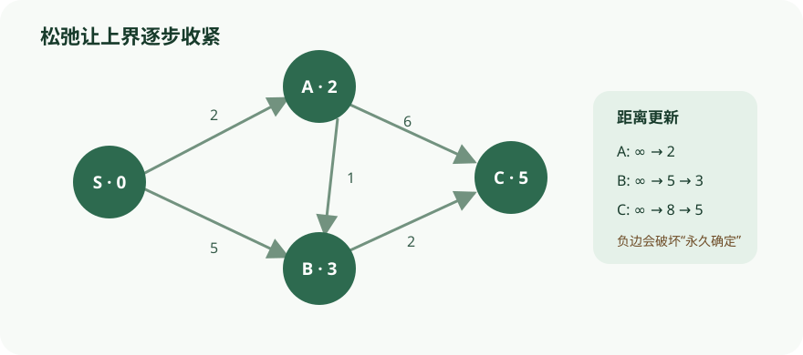

逐轮跟踪松弛，重点辨认 Dijkstra 永久确定顶点所依赖的非负边权假设。
依据本地课程资料 lectures/chap4.pdf、dis04.pdf、hw05.pdf 重绘；交互用于解释算法状态与证明不变量，不替代正文中的完整论证。

CS170 · 第 5 讲
从 BFS 到 Dijkstra、Bellman–Ford 与 DAG 最短路，理解松弛、不变量和负边界。
在图中，距离（distance） 指两个节点之间最短路径的长度。形式化地，节点 \(u\) 与 \(v\) 之间的距离 \(\text{dist}(u,v)\) 是所有 \(u\)-\(v\) 路径中边数的最小值（单位边长情形）。
一个直观的物理模型：把每个顶点做成一个球、每条边换成一段绳子，当你把起点 \(s\) 的球向上拉起时，能被连带拉起的球恰好就是从 \(s\) 可达的顶点；而这些球低于 \(s\) 的高度就是它们到 \(s\) 的距离。边 \((D,E)\) 若不属于任何最短路径，则绳子保持松弛——这正是图 4.2 揭示的几何直觉。
层序扩展思想把图按距离 \(s\) 的远近分成若干层：第 0 层是 \(\{s\}\)，第 1 层是距离为 1 的顶点，第 2 层是距离为 2 的顶点，依此类推。一旦我们已确定第 \(0,1,\dots,d\) 层，则第 \(d+1\) 层的顶点恰好就是那些尚未被发现但与第 \(d\) 层相邻的顶点。
这提示一种迭代算法：每次只让两层"活跃"——第 \(d\) 层已被完全确定，第 \(d+1\) 层正通过扫描第 \(d\) 层的邻居被发现。
BFS 算法（Breadth-First Search，广度优先搜索）procedure bfs(G, s)
输入：图 G = (V, E)，有向或无向；起点 s ∈ V
输出：对所有从 s 可达的顶点 u，dist(u) 设为 s 到 u 的距离
for all u ∈ V: dist(u) = ∞
dist(s) = 0
Q = [s] // 队列，初始仅含 s
while Q 不为空:
u = eject(Q) // 从队首弹出
for all edges (u,v) ∈ E:
if dist(v) = ∞:
inject(Q, v) // 从队尾入队
dist(v) = dist(u) + 1
队列 \(Q\) 的语义：在距离 \(d = 1,2,3,\dots\) 的每个阶段，存在一个时刻 \(Q\) 中恰好包含所有距离为 \(d\) 的节点。
正确性（归纳不变量）对 \(d = 0,1,2,\dots\) 归纳，断言：存在一个时刻使得 1. 所有距离 \(\le d\) 的节点距离已被正确设置； 2. 所有其他节点距离仍为 \(\infty\)； 3. 队列中恰好是距离为 \(d\) 的节点。
基础情形 \(d=0\)：只有 \(s\)，\(\text{dist}(s)=0\)，\(Q=[s]\)，成立。
归纳步骤：假设对 \(d\) 成立。处理 \(Q\) 中节点时，每个距离为 \(d\) 的节点 \(u\) 的未发现邻居 \(v\) 被赋予距离 \(d+1\) 并入队。当 \(Q\) 中距离 \(d\) 的节点全部处理完毕，队列中恰好剩下距离 \(d+1\) 的节点，且它们的距离已被正确设置。
由此，BFS 树中从 \(s\) 出发的每条路径都是最短路径——BFS 树是最短路径树（shortest-path tree）。
复杂度每个顶点至多入队一次 → \(O(|V|)\) 次队列操作。
内层循环在有向图中每条边被检查一次，在无向图中被检查两次 → \(O(|E|)\)。
总时间 \(O(|V| + |E|)\)，与 DFS 同为线性。
DFS 用栈（递归），一路深入再回溯，可能绕远路到达近处顶点。
BFS 用队列，按距离递增顺序访问，像水波扩散。
BFS 只关心从 \(s\) 出发的距离，不会重启搜索其他连通分量；不可达节点直接忽略。
在图 4.1 的图上以 \(s=S\) 为起点、按字母顺序处理邻居，追踪队列与距离变化：
| 处理节点 | 队列（处理后） | 距离更新 |
|---|---|---|
| 初始 | \([S]\) | \(\text{dist}(S)=0\) |
| \(S\) | \([A,C,D,E]\) | \(\text{dist}(A)=\text{dist}(C)=\text{dist}(D)=\text{dist}(E)=1\) |
| \(A\) | \([C,D,E,B]\) | \(\text{dist}(B)=2\)（通过 \(A\) 发现） |
| \(C\) | \([D,E,B]\) | — |
| \(D\) | \([E,B]\) | — |
| \(E\) | \([B]\) | — |
| \(B\) | \([]\) | — |
BFS 树（右图）中 \(S \to A \to B\) 的长度为 2，而 DFS 树曾给出长度 3 的路径 \(S \to A \to \dots \to B\)，可见 BFS 树的所有路径都是最短的。
实际最短路径问题中，边长往往不同。对每条边 \(e \in E\) 标注长度 \(l_e\)（也可记 \(l(u,v)\) 或 \(l_{uv}\)）。长度可表示时间、费用等需最小化的量。本章主要考虑正整数边长。
从 BFS 到 Dijkstra：虚拟节点技巧BFS 只能处理单位边长。一个朴素技巧：把每条边 \(e=(u,v)\) 拆成 \(l_e\) 条单位边，中间插入 \(l_e-1\) 个虚拟节点（dummy nodes），得到新图 \(G'\)。\(G'\) 所有边长均为 1，可在 \(G'\) 上跑 BFS 得到原图 \(G\) 的距离。
问题：当边长很大时，\(G'\) 充斥大量虚拟节点，BFS 把大量时间浪费在"我们并不关心"的节点上。
闹钟机制（Alarm Clock Algorithm）为每个真实节点设置一个"闹钟"，预估到达时间。算法只在闹钟响起时"醒来"处理一个真实节点：
则 \(s\) 到 \(u\) 的距离就是 \(T\)。
对 \(u\) 的每个邻居 \(v\)：若 \(v\) 无闹钟，设一个在 \(T + l(u,v)\)；若 \(v\) 的闹钟晚于 \(T + l(u,v)\)，则提前到该时间。
这正是一个优先队列（priority queue）语义：键值为闹钟时间，支持插入、减小键、取最小。
Dijkstra 算法（Dijkstra's Algorithm）procedure dijkstra(G, l, s)
输入：图 G=(V,E)，正边长 l_e；起点 s
输出：dist(u) 设为 s 到 u 的距离；prev 记录前驱
for all u ∈ V: dist(u) = ∞; prev(u) = nil
dist(s) = 0
H = makequeue(V) // 以 dist 为键的优先队列
while H 不为空:
u = deletemin(H)
for all edges (u,v) ∈ E:
if dist(v) > dist(u) + l(u,v):
dist(v) = dist(u) + l(u,v)
prev(v) = u
decreasekey(H, v)
\(\text{dist}(u)\) 是节点 \(u\) 的当前闹钟时间（\(\infty\) 表示尚未设置）。
\(\text{prev}\) 数组记录最短路径上的前驱，可回溯重建完整路径，是所有最短路径的紧凑摘要。
直觉：Dijkstra 就是 BFS，只是用优先队列替代普通队列，从而按距离顺序处理节点、兼顾边长。
从 \(s\) 向外扩展一个"已知区域" \(R\)，每次加入距离 \(s\) 最近的未知节点 \(v\)。
关键观察：设 \(u\) 是 \(s\)-\(v\) 最短路径上 \(v\) 的前驱，由于边长为正，\(u\) 比 \(v\) 更接近 \(s\)，故 \(u \in R\)。因此 \(s\)-\(v\) 最短路径必然是"\(R\) 中某最短路径 + 一条边"。
于是 \(v\) 就是使 \(\text{dist}(s,u) + l(u,v)\) 最小的那个外部节点。算法每次只考虑最新加入节点带来的新扩展，用优先队列实现即回到 Dijkstra。
归纳不变量：每次 while 循环结束后，存在 \(d\) 使得 1. \(R\) 内节点距离 \(\le d\)，\(R\) 外节点距离 \(\ge d\)； 2. 对每个节点 \(u\)，\(\text{dist}(u)\) 是所有中间节点被限制在 \(R\) 内的 \(s\)-\(u\) 最短路径长度（不存在则为 \(\infty\)）。
基础情形 \(d=0\) 显然，归纳步骤由上述讨论可得。
运行时间Dijkstra 与 BFS 结构相同，但优先队列操作更耗时。共有 \(|V|\) 次 deletemin 和 \(|V|+|E|\) 次 insert/decreasekey。
| 实现 | deletemin | insert/decreasekey | 总时间 |
|---|---|---|---|
| 数组 | \(O(|V|)\) | \(O(1)\) | \(O(|V|^2)\) |
| 二叉堆 | \(O(\log|V|)\) | \(O(\log|V|)\) | \(O((|V|+|E|)\log|V|)\) |
| \(d\)-ary 堆 | \(O(d \frac{\log|V|}{\log d})\) | \(O(\frac{\log|V|}{\log d})\) | \(O((|V|\cdot d + |E|)\frac{\log|V|}{\log d})\) |
| Fibonacci 堆 | \(O(\log|V|)\) | \(O(1)\) 均摊 | \(O(|V|\log|V| + |E|)\) |
稠密图（\(|E| = \Theta(|V|^2)\)）：数组实现 \(O(|V|^2)\) 最优。
稀疏图（\(|E| = O(|V|)\)）：二叉堆 \(O(|V|\log|V|)\) 更优。
\(d\)-ary 堆取 \(d \approx |E|/|V|\)（平均度数）可在稀疏与稠密间平滑过渡；中间密度 \(|E| = |V|^{1+\varepsilon}\) 时可达 \(O(|E|)\) 线性。
Fibonacci 堆理论最优但实现复杂，实践中吸引力有限。
最简单的优先队列：用无序数组存所有顶点的键值（初始 \(\infty\)）。
insert / decreasekey：直接修改键值 → \(O(1)\)。
deletemin：线性扫描找最小 → \(O(|V|)\)。
总时间 \(O(|V|^2)\)，在稠密图上反而具竞争力。
在图 4.9 的图上以 \(s=A\) 为起点运行 Dijkstra（边长：\(A\!-\!B\!=\!4\), \(A\!-\!C\!=\!2\), \(A\!-\!D\!=\!1\), \(B\!-\!C\!=\!1\), \(B\!-\!E\!=\!3\), \(C\!-\!D\!=\!3\), \(C\!-\!E\!=\!5\), \(D\!-\!E\!=\!2\)）：
| 步骤 | 取出 \(u\) | dist 数组 \((A,B,C,D,E)\) | 说明 |
|---|---|---|---|
| 初始 | — | \((0,\infty,\infty,\infty,\infty)\) | 只有 \(A\) 为 0 |
| 1 | \(A(0)\) | \((0,4,2,1,\infty)\) | 松弛 \(A\) 的邻居：\(B=4,C=2,D=1\) |
| 2 | \(D(1)\) | \((0,4,2,1,3)\) | 松弛 \(D\!-\!E\)：\(1+2=3\) |
| 3 | \(C(2)\) | \((0,3,2,1,3)\) | 松弛 \(C\!-\!B\)：\(2+1=3<4\)，更新 \(B\) |
| 4 | \(B(3)\) | \((0,3,2,1,3)\) | 松弛 \(B\!-\!E\)：\(3+3=6>3\)，不更新 |
| 5 | \(E(3)\) | \((0,3,2,1,3)\) | 完成 |
最终最短路径树由 prev 回溯：\(A\!\to\!D\)、\(A\!\to\!C\)、\(C\!\to\!B\)、\(D\!\to\!E\)。可见 \(A\!\to\!B\) 的最短路径是 \(A\!\to\!C\!\to\!B\)（长 3），而非直达（长 4）；\(A\!\to\!E\) 走 \(A\!\to\!D\!\to\!E\)（长 3）最优。
二叉堆（binary heap）是一种基于完全二叉树的优先队列结构，用于高效支持插入、删除最小值（delete-min）和 decrease-key 操作。
结构性质：完全二叉树要求除最后一层外每层都是满的，且最后一层的结点从左到右依次填满。因此，含 \(n\) 个结点的堆高度为 \(\lfloor \log_2 n \rfloor\)。堆的堆序性质（min-heap）规定：每个结点的键值不大于其子结点的键值。由此可推出：根结点始终持有整个堆的最小元素。
插入操作（insert）：将新元素放在树的最底层第一个空闲位置（即数组末尾），然后执行「上浮」（bubble up）：若该新元素小于其父结点，则与之交换并继续向上比较。交换次数不超过树高，因此插入的时间复杂度为 \(O(\log n)\)。decrease-key 操作类似，只是从该元素当前所在位置开始上浮。
删除最小值（delete-min）：取出根结点的值作为返回值。为了维持完全二叉树的形状，将树的最底层最右结点移到根位置，然后执行「下沉」（siftdown）：若该结点大于其任一子结点，则与较小的子结点交换并继续向下比较。下沉次数同样不超过树高，复杂度为 \(O(\log n)\)。
数组表示：完全二叉树可以用数组按层序（逐层向下、每层从左到右）紧凑存储，无需额外指针。若数组下标从 1 开始，则下标为 \(j\) 的结点满足：父结点下标 \(\lfloor j/2 \rfloor\)，左子 \(2j\)，右子 \(2j+1\)。上下移动均可通过整数下标运算在常数时间完成。建堆（makeheap）通过从第 \(n\) 个结点倒序到根逐个调用下沉，可在 \(O(n)\) 时间内完成（通过 \(\sum_{i=1}^{n} \log(n/i)\) 放缩可证）。
procedure bubbleup(h, x, i)
p = ⌊i/2⌋
while i ≠ 1 and key(h[p]) > key(x):
h[i] = h[p]; i = p; p = ⌊i/2⌋
h[i] = x
procedure siftdown(h, x, i)
c = minchild(h, i)
while c ≠ 0 and key(h[c]) < key(x):
h[i] = h[c]; i = c; c = minchild(h, i)
h[i] = x
初始最小堆（数组表示，下标 1 开始）：
数组：[–, 3, 5, 10, 12, 11, 6, 8, 15, 20, 13]
对应树形：
3
/ \
5 10
/ \ / \
12 11 6 8
/ \ /
15 20 13
插入 7：
1. 将 7 放入下一个空闲位置（位置 11，作为位置 5 即结点 11 的左子）。
2. \(7 < 11\)（父），交换 → 7 升至位置 5，11 降至位置 11。
3. \(7 > 5\)（位置 5 的父为位置 2，值 5），停止。
4. 结果数组：[–, 3, 5, 10, 12, 7, 6, 8, 15, 20, 13, 11]
删除最小值（在原始堆上操作）：
1. 取出根（3）。将最后一个元素 13（位置 10）移至根。堆现在有 9 个元素。
2. \(13 > \min(5,10) = 5\)，与 5 交换 → 13 到位置 2。
3. \(13 > \min(12,11) = 11\)，与 11 交换 → 13 到位置 5。
4. 13 在位置 5，其子为位置 10 和 11，均超出堆范围（9 个元素），无子结点，停止。
5. 结果数组：[–, 5, 11, 10, 12, 13, 6, 8, 15, 20]
两次操作均最多沿树高 \(O(\log n)\) 次交换。
d 叉堆（d-ary heap）是二叉堆的直接推广：每个结点最多有 \(d\) 个子结点（\(d \geq 2\)），树高因此降为 \(\Theta(\log_d n) = \Theta((\log n)/(\log d))\)。
插入与删除最小值的代价：插入时元素沿树高上浮，比较与交换次数正比于树高，因此速度较二叉堆提升约 \(\Theta(\log d)\) 倍，达到 \(O(\log_d n)\)。但删除最小值时，下沉（siftdown）过程需要在当前结点的 \(d\) 个子结点中选出最小者，每层耗时 \(O(d)\)，最多下沉 \(\log_d n\) 层，因此总复杂度为 \(O(d \log_d n)\)。可见增大 \(d\) 是一把双刃剑——插入更快，删除更慢。
数组表示：完全 d 叉树同样可以按层序存入数组。若下标从 1 开始，则下标为 \(j\) 的结点满足：父结点下标 \(\lceil (j-1)/d \rceil\)（二叉堆时即为 \(\lfloor j/2 \rfloor\)），子结点下标集合为 \(\{(j-1)d+2, \ldots, \min\{n, (j-1)d+d+1\}\}\)。与二叉堆相比，父子关系的下标换算稍复杂，但仍为常数时间运算。
适用场景：当应用中插入或 decrease-key 远比 delete-min 频繁时（如 Dijkstra 算法中边的松弛常触发 decrease-key），适当增大 \(d\) 可降低整体运行时间。实际取值需权衡两种操作的频率与具体常数因子。
Dijkstra 算法依赖一个关键假设：从起点到任一结点 \(v\) 的最短路径只经过比 \(v\)「更近」的结点。当边权可为负时，这一性质不再成立——最短路径可能先经过「更远」的结点再折返，导致贪心策略失效。
松弛操作（update）：对边 \((u, v)\) 执行 \[ \text{dist}(v) = \min\{\text{dist}(v),\ \text{dist}(u) + l(u, v)\} \] 该操作是「安全」的：它不会让 \(\text{dist}(v)\) 变得过小；并且当 \(u\) 是 \(v\) 在最短路径上的前驱且 \(\text{dist}(u)\) 已正确时，它能正确设置 \(\text{dist}(v)\)。Dijkstra 算法本质上就是一个精心安排的 update 序列，但在负权边下该序列不再正确。
Bellman-Ford 算法：既然任何最短路径至多含 \(|V|-1\) 条边，我们只需对所有边重复执行 \(|V|-1\) 轮松弛。每轮遍历全部边，总时间复杂度为 \(O(|V| \cdot |E|)\)。
procedure shortest-paths(G, l, s)
for all u ∈ V: dist(u) = ∞, prev(u) = nil
dist(s) = 0
repeat |V|-1 times:
for all e ∈ E: update(e)
负环检测：若图中存在从起点可达的负权环，则最短路径问题无定义（可无限绕环降低代价）。由于不含负环时最短路径至多 \(|V|-1\) 条边，第 \(|V|\) 轮松弛不应再有任何 \(\text{dist}\) 被更新。因此额外执行一轮：若仍有 \(\text{dist}\) 值减小，则报告存在负环。实际实现中，若某轮无任何更新可提前终止。
有向无环图（DAG）天然不含环，因此不可能有负权环。DAG 上的单源最短路径可以在线性时间内求解。
核心观察：在 DAG 的任意路径中，顶点按拓扑序严格递增出现。因此，只要按拓扑排序（线性化）的顺序处理顶点，并在处理每个顶点时松弛其所有出边，就能保证：当处理到顶点 \(u\) 时，\(\text{dist}(u)\) 已经是从 \(s\) 到 \(u\) 的最短距离（因为所有可能到达 \(u\) 的路径上的前驱都已被处理）。这样每条最短路径上的边都会按正确顺序被处理一次。
算法步骤： 1. 对 DAG 运行深度优先搜索，得到拓扑序。 2. 初始化 \(\text{dist}(s) = 0\)，其余为 \(\infty\)。 3. 按拓扑序遍历每个顶点 \(u\)，对每条出边 \((u, v)\) 执行松弛。
该算法不要求边权为正。特别地，若将所有边权取反后运行相同算法，即可求得 DAG 上的最长路径。
procedure dag-shortest-paths(G, l, s)
for all u ∈ V: dist(u) = ∞, prev(u) = nil
dist(s) = 0
Linearize G
for each u ∈ V, in linearized order:
for all edges (u,v) ∈ E: update(u, v)
时间复杂度为 \(O(|V| + |E|)\)，是单源最短路径中最快的情形。
依据本地课程资料 lectures/chap4.pdf、dis04.pdf、hw05.pdf 重绘；交互用于解释算法状态与证明不变量，不替代正文中的完整论证。

BFS 只在所有边长相等（单位长度）时才能保证最短路径。边长不同时必须用能兼顾边权的算法（如 Dijkstra）。
Dijkstra 要求边长为正。负边长会破坏"一旦取出即已确定"的贪心性质，导致错误结果；需改用 Bellman-Ford 等算法。
虽然数组访问是 O(1)，但插入需要上浮、删除需要下沉，最多沿树高 O(log n) 次交换，复杂度是 O(log n)，不是 O(1)。
增大 d 会加速插入（树高降低），但减慢 delete-min（每层需比较 d 个子结点，O(d log_d n)），需权衡两种操作的频率选择 d。
加常数会改变不同长度路径之间的相对大小（因为各路径边数不同），可能破坏最短路径结构，这是错误的（参见习题 4.8）。
问题：为什么在单位边长图上 BFS 树的所有路径都是最短路径？
问题：关于 Dijkstra 算法，下列哪项是正确的？
问题：在 d 叉堆中，delete-min 操作的时间复杂度为 \(O(d \log_d n)\) 的主要原因是什么？
问题：关于 Bellman-Ford 算法与负环检测，下列哪项正确？
lectures/chap4.pdf · 本段对应小节 · confidence: high · 距离定义、BFS 算法与正确性、Dijkstra 算法与优先队列实现lectures/chap4.pdf · 本段对应小节 · confidence: high · 4.5.2 节定义了完全二叉树上的堆序性质，以及插入上浮/删除下沉的操作流程。lectures/chap4.pdf · 本段对应小节 · confidence: high · 4.5.3 节描述了 d 叉堆的结构、树高变化与操作复杂度权衡。lectures/chap4.pdf · 本段对应小节 · confidence: high · 4.6.1 节给出 Bellman-Ford 算法的主循环：|V|-1 轮全边松弛。lectures/chap4.pdf · 本段对应小节 · confidence: high · 4.6.2 节通过第 |V| 轮是否仍有更新来判断负环的存在。lectures/chap4.pdf · 本段对应小节 · confidence: high · 4.7 节给出 DAG 上按拓扑序松弛出边的线性时间算法。